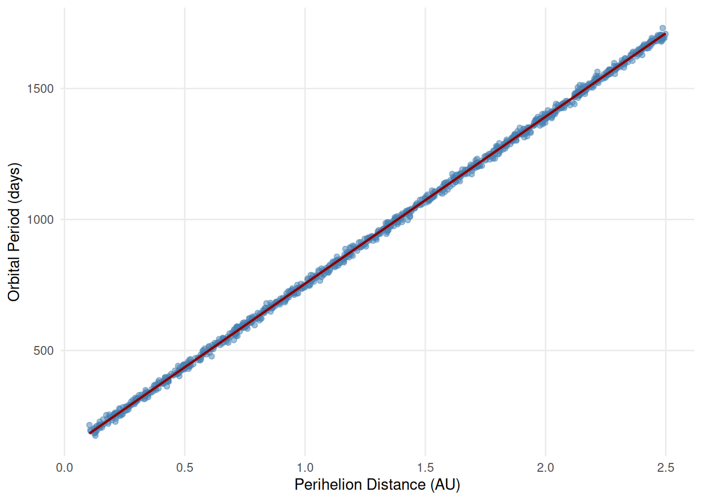
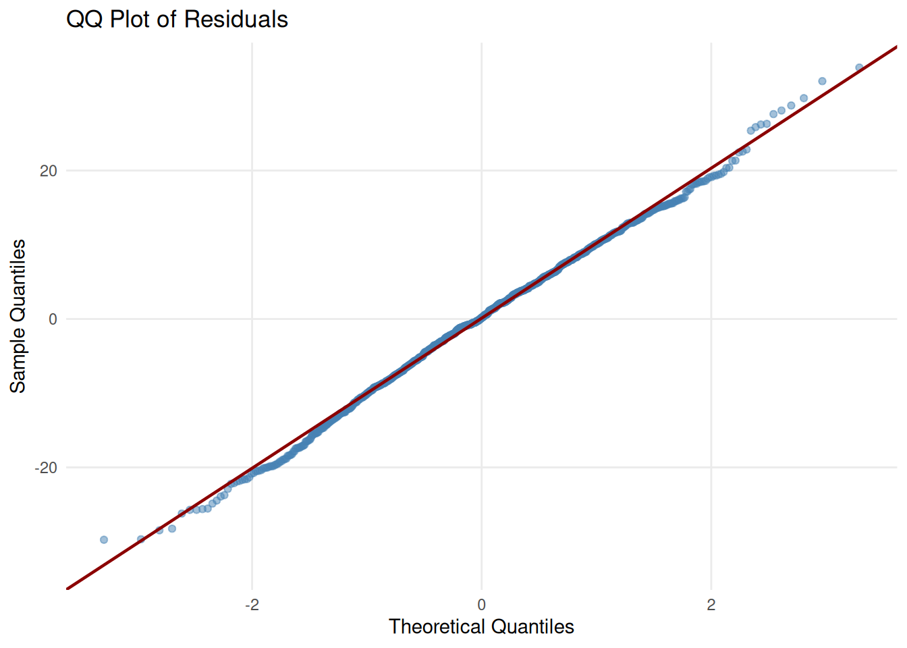

9.2 Confidence and Prediction Intervals
Key Concepts
- Compute and interpret the value of\(r^2\)for a simple linear model using values in the ANOVA table.
- Compute and interpret a confidence interval for the mean response for a specific value of the predictor in a regression model
- Compute and interpret a prediction interval for the individual responses for a specific value of the predictor in a regression model
Understanding the definition of\(r^2\)through ANOVA
Variability in the response variable can be partitioned into two components:
-\(SS_{\text{Regression}}\) -\(SS_{\text{Total}}\)
When conducting a simple linear regression using the computer, often times, an ANOVA table is included in the output. The Sum of Squares column of the ANOVA table gives us a way to partition the variability of our response into two components, variability we can explain with our regression model, and variability that is unexplained. In the context of regression, this looks like
\[ SS_{\text{Total}} = SS_{\text{Regression}} + SS_{\text{Error}} \]
In the previous section the coefficient of determination,\(r^2\), could be found by squaring the correlation coefficient,\(r\). It can also be computed as
Another formula for\(r^2\)is
\[ r^2 = \frac{SS_{\text{Regression}}}{SS_{\text{Total}}} \]
\[ r^2 = \frac{SS_{\text{Regression}}}{SS_{\text{Total}}}. \]
This is the reason\(r^2\)is interpreted as the percentage of variation in the response variable that we can explain by the linear regression using the explanatory variable.
Class Example 9.2.1: Asteroids!
NASA’s Near Earth Object Web Service (NeoWs) tracks near earth asteroids. In a sample of 1000 near earth asteroids taken in 2024 the orbital period (number of days to orbit the earth) and perihelion distance (distance from earth when the earth is closest to the sun, measured in Astronomical Units) was recorded. A scatterplot of the data and QQ plot of the residuals are included below. Computer output is provided below.


| Source | df | SS | MS | F | \(p\)-value |
|---|---|---|---|---|---|
| Per. Dist. | 1 | 2.3 \(\times 10^7\) | \(<0.0001\) | ||
| Error | 998 | 1.1 \(\times 10^8\) | |||
| Total | 999 |
| Coefficients | Estimate | Std. Error | \(t\) | \(p\)-value |
|---|---|---|---|---|
| (Intercept) | \(117.00\) | \(37.42\) | \(3.13\) | \(< 0.0001\) |
| Per. Dist. | \(637.90\) | \(44.29\) | \(14.40\) | \(< 0.0001\) |
- Complete the partial ANOVA table.
- Calculate\(r^2\)and provide an interpretation in the context of the study.
- Write 2 to 3 sentences describing the findings of this study. If it is inappropriate to conduct inference, simply state that and justify your decision.
- Suppose a new asteroid was discovered with a perihelion distance of 3 AU. Assuming it was appropriate to conduct inference, would it be reasonable to use these results to predict the orbital period of this asteroid? Explain.
Confidence and prediction intervals
We use confidence and prediction intervals to account for our uncertainty in making predictions using the regression equation.
One of the main reasons why we conduct linear regression is to predict a response for a given value of the explanatory variable. You can easily predict the response for any value of the explanatory variable using the regression equation provided you are not extrapolating beyond the range of the data. However, when making this prediction, it is important to account for the uncertainty in the estimates for slope and intercept. We can account for this uncertainty by using an interval. There are two main types of intervals that we will use for predictions:
- Confidence interval for the average response
- Prediction interval for an individual response
Intervals for a predicted responses
Recall that we use the symbol \(\widehat{y}\)to represent the predicted value of \(y\), and this is found using the least squares regression equation
\[ \widehat{y} = b_0 + b_1 x \]
The confidence interval for the average response when\(x=x^*\), is
\[ \widehat{y} \pm t^*_{n-2} \sqrt{ MSE \left( \frac{ 1 }{ n } + \frac{ (x^* - \overline{x})^2}{(n-1) s_x^2} \right)}. \]
The interpretation for the confidence interval for the average response when\(x = x^*\)is:
The prediction interval for an individual response when\(x=x^*\), is
\[ \widehat{y} \pm t^*_{n-2} \sqrt{ MSE \left(1 + \frac{ 1 }{ n } + \frac{ (x^* - \overline{x})^2}{(n-1) s_x^2} \right)}. \]
The interpretation for the prediction interval for an individual response when\(x = x^*\)is:
Two facts about confidence and prediction intervals
- As we predict further away from \(\overline{x}\), the intervals get wider. For example, if \(\overline{x} = 5\), a prediction interval for\(x^* = 7\)will be smaller than\(x^* = 10\).
- The prediction interval for an individual response is always wider than the confidence interval for the average response.
Class Example 9.2.2: NFL Rushing
The tables below provide computer output for the regression line to predict number of rushing yards a player will have in a season based on their number of rushing attempts. The dataset contains all players in the NFL who attempted a rush from 2001 to 2023.
| Coefficients | Estimate | Std. Error | \(t\) | \(p\)-value |
|---|---|---|---|---|
| (Intercept) | \(-4.424\) | \(0.782\) | \(-5.66\) | \(< 0.0001\) |
| Attempts | \(4.31\) | \(0.009\) | \(478.89\) | \(< 0.0001\) |
| Source | df | SS | MS | F | \(p\)-value |
|---|---|---|---|---|---|
| Regression | \(1\) | \(7.14 \times 10^8\) | \(7.14 \times 10^8\) | \(211099\) | \(<0.0001\) |
| Error | \(7514\) | \(2.54 \times 10^7\) | \(3.38 \times 10^3\) | ||
| Total | \(7515\) | \(7.39 \times 10^8\) |
- Is the number of rushing attempts a good predictor of the number of season rushing yards? Justify your answer using specific values in the output.
- Find and interpret\(r^2\)for this regression.
- If a player has 300 rushing attempts in a season, how many rushing yards would you predict they would have?
- Suppose the 95% prediction interval for players that have 300 season rushing attempts is\((1188.58, 1388.58)\). Provide an interpretation of this interval in the context of the question.
Class Example 9.2.3: Predicting Mustang Prices
The dataset MustangPrice contains information for a sample of 25 used Mustang cars offered for sale on a website. Suppose that we are interested in predicting the Price of a Mustang (in thousands of dollars) based on how old it is (Age in years). Some output for fitting this model is shown in the tables below. You may assume that any necessary conditions for inference hold.
| Coefficients | Estimate | Std. Error | \(t\) | \(p\)-value |
|---|---|---|---|---|
| (Intercept) | \(30.264\) | \(3.440\) | \(8.80\) | \(<0.0001\) |
| Age | \(-1.717\) | \(0.365\) | \(-4.71\) | \(< 0.0001\) |
| Source | df | SS | MS | F | \(p\)-value |
|---|---|---|---|---|---|
| Regression | \(1\) | \(1454.4\) | \(1454.4\) | \(22.15\) | \(<0.0001\) |
| Error | \(23\) | \(1509.9\) | \(65.6\) | ||
| Total | \(24\) | \(2964.3\) |
- Is age of a used Mustang an effective predictor of its price? Justify your answer using the information from the output above.
- You are thinking about buying a 5 year-old Mustang, what would you predict the price to be?
- Two intervals are given below. One is the 95% confidence interval for mean price and one is the 95% prediction interval for individual prices, for Mustangs that are 5 years old. Which is which?
(17.49, 25.86): _______________ (4.40, 38.96): _______________
- Provide an interpretation for both of the intervals given in c) above in the context of the question.
- The 95% prediction interval for Mustangs that are 10 years old is (9.51, 16.68). Is the average age of Mustangs in the dataset closer to 5 years or 10 years? Explain.